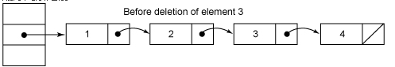
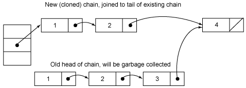

Java集合---ConcurrentHashMap原理分析
集合是编程中最常用的数据结构。而谈到并发，几乎总是离不开集合这类高级数据结构的支持。比如两个线程需要同时访问一个中间临界区（Queue），比如常会用缓存作为外部文件的副本（HashMap）。这篇文章主要分析jdk1.5的3种并发集合类型（concurrent，copyonright，queue）中的ConcurrentHashMap，让我们从原理上细致的了解它们，能够让我们在深度项目开发中获益非浅。
通过分析Hashtable就知道，synchronized是针对整张Hash表的，即每次锁住整张表让线程独占，ConcurrentHashMap允许多个修改操作并发进行，其关键在于使用了锁分离技术。它使用了多个锁来控制对hash表的不同部分进行的修改。ConcurrentHashMap内部使用段(Segment)来表示这些不同的部分，每个段其实就是一个小的hash table，它们有自己的锁。只要多个修改操作发生在不同的段上，它们就可以并发进行。
有些方法需要跨段，比如size()和containsValue()，它们可能需要锁定整个表而而不仅仅是某个段，这需要按顺序锁定所有段，操作完毕后，又按顺序释放所有段的锁。这里“按顺序”是很重要的，否则极有可能出现死锁，在ConcurrentHashMap内部，段数组是final的，并且其成员变量实际上也是final的，但是，仅仅是将数组声明为final的并不保证数组成员也是final的，这需要实现上的保证。这可以确保不会出现死锁，因为获得锁的顺序是固定的。
一、结构解析
ConcurrentHashMap和Hashtable主要区别就是围绕着锁的粒度以及如何锁,可以简单理解成把一个大的HashTable分解成多个，形成了锁分离。如图:

而Hashtable的实现方式是---锁整个hash表
二、应用场景
当有一个大数组时需要在多个线程共享时就可以考虑是否把它给分层多个节点了，避免大锁。并可以考虑通过hash算法进行一些模块定位。
其实不止用于线程，当设计数据表的事务时（事务某种意义上也是同步机制的体现），可以把一个表看成一个需要同步的数组，如果操作的表数据太多时就可以考虑事务分离了（这也是为什么要避免大表的出现），比如把数据进行字段拆分，水平分表等.
三、源码解读
ConcurrentHashMap中主要实体类就是三个：ConcurrentHashMap（整个Hash表）,Segment（桶），HashEntry（节点），对应上面的图可以看出之间的关系
/** * The segments, each of which is a specialized hash table */ final Segment<K,V>[] segments;
不变(Immutable)和易变(Volatile)
ConcurrentHashMap完全允许多个读操作并发进行，读操作并不需要加锁。如果使用传统的技术，如HashMap中的实现，如果允许可以在hash链的中间添加或删除元素，读操作不加锁将得到不一致的数据。ConcurrentHashMap实现技术是保证HashEntry几乎是不可变的。HashEntry代表每个hash链中的一个节点，其结构如下所示：
1. static final class HashEntry<K,V> {
2. final K key;
3. final int hash;
4. volatile V value;
5. final HashEntry<K,V> next;
6. }
可以看到除了value不是final的，其它值都是final的，这意味着不能从hash链的中间或尾部添加或删除节点，因为这需要修改next 引用值，所有的节点的修改只能从头部开始。对于put操作，可以一律添加到Hash链的头部。但是对于remove操作，可能需要从中间删除一个节点，这就需要将要删除节点的前面所有节点整个复制一遍，最后一个节点指向要删除结点的下一个结点。这在讲解删除操作时还会详述。为了确保读操作能够看到最新的值，将value设置成volatile，这避免了加锁。
其它
为了加快定位段以及段中hash槽的速度，每个段hash槽的的个数都是2^n，这使得通过位运算就可以定位段和段中hash槽的位置。当并发级别为默认值16时，也就是段的个数，hash值的高4位决定分配在哪个段中。但是我们也不要忘记《算法导论》给我们的教训：hash槽的的个数不应该是 2^n，这可能导致hash槽分配不均，这需要对hash值重新再hash一次。（这段似乎有点多余了 ）
这是定位段的方法：
1. final Segment<K,V> segmentFor(int hash) {
2. return segments[(hash >>> segmentShift) & segmentMask];
3. }
2. implements ConcurrentMap<K, V>, Serializable {
3. /**
4. * Mask value for indexing into segments. The upper bits of a
5. * key's hash code are used to choose the segment.
6. */
7. final int segmentMask;
8.
9. /**
10. * Shift value for indexing within segments.
11. */
12. final int segmentShift;
13.
14. /**
15. * The segments, each of which is a specialized hash table
16. */
2. private static final long serialVersionUID = 2249069246763182397L;
3. /**
4. * The number of elements in this segment's region.
5. */
6. transient volatile int count;
7.
8. /**
9. * Number of updates that alter the size of the table. This is
10. * used during bulk-read methods to make sure they see a
11. * consistent snapshot: If modCounts change during a traversal
12. * of segments computing size or checking containsValue, then
13. * we might have an inconsistent view of state so (usually)
14. * must retry.
15. */
16. transient int modCount;
17.
18. /**
19. * The table is rehashed when its size exceeds this threshold.
20. * (The value of this field is always <tt>(int)(capacity *
21. * loadFactor)</tt>.)
22. */
23. transient int threshold;
24.
25. /**
26. * The per-segment table.
27. */
28. transient volatile HashEntry<K,V>[] table;
29.
30. /**
31. * The load factor for the hash table. Even though this value
32. * is same for all segments, it is replicated to avoid needing
33. * links to outer object.
34. * @serial
35. */
count用来统计该段数据的个数，它是volatile(volatile 变量使用指南)，它用来协调修改和读取操作，以保证读取操作能够读取到几乎最新的修改。协调方式是这样的，每次修改操作做了结构上的改变，如增加/删除节点(修改节点的值不算结构上的改变)，都要写count值，每次读取操作开始都要读取count的值。这利用了 Java 5中对volatile语义的增强，对同一个volatile变量的写和读存在happens-before关系。modCount统计段结构改变的次数，主要是为了检测对多个段进行遍历过程中某个段是否发生改变，在讲述跨段操作时会还会详述。threashold用来表示需要进行rehash的界限值。table数组存储段中节点，每个数组元素是个hash链，用HashEntry表示。table也是volatile，这使得能够读取到最新的 table值而不需要同步。loadFactor表示负载因子。
2. hash = hash(key.hashCode());
3. return segmentFor(hash).remove(key, hash, null);
4. }
整个操作是先定位到段，然后委托给段的remove操作。当多个删除操作并发进行时，只要它们所在的段不相同，它们就可以同时进行。下面是Segment的remove方法实现：
1. V remove(Object key, int hash, Object value) {
2. lock();
3. try {
4. int c = count - 1;
5. HashEntry<K,V>[] tab = table;
6. int index = hash & (tab.length - 1);
7. HashEntry<K,V> first = tab[index];
8. HashEntry<K,V> e = first;
9. while (e != null && (e.hash != hash || !key.equals(e.key)))
10. e = e.next;
11.
12. V oldValue = null;
13. if (e != null) {
14. V v = e.value;
15. if (value == null || value.equals(v)) {
16. oldValue = v;
17. // All entries following removed node can stay
18. // in list, but all preceding ones need to be
19. // cloned.
20. ++modCount;
21. HashEntry<K,V> newFirst = e.next;
22. *for (HashEntry<K,V> p = first; p != e; p = p.next)
23. *newFirst = new HashEntry<K,V>(p.key, p.hash,
24. newFirst, p.value);
25. tab[index] = newFirst;
26. count = c; // write-volatile
27. }
28. }
29. return oldValue;
30. } finally {
31. unlock();
整个操作是在持有段锁的情况下执行的，空白行之前的行主要是定位到要删除的节点e。接下来，如果不存在这个节点就直接返回null，否则就要将e前面的结点复制一遍，尾结点指向e的下一个结点。e后面的结点不需要复制，它们可以重用。
中间那个for循环是做什么用的呢？（*号标记）从代码来看，就是将定位之后的所有entry克隆并拼回前面去，但有必要吗？每次删除一个元素就要将那之前的元素克隆一遍？这点其实是由entry的不变性来决定的，仔细观察entry定义，发现除了value，其他所有属性都是用final来修饰的，这意味着在第一次设置了next域之后便不能再改变它，取而代之的是将它之前的节点全都克隆一次。至于entry为什么要设置为不变性，这跟不变性的访问不需要同步从而节省时间有关
下面是个示意图
删除元素之前：

删除元素3之后：

整个remove实现并不复杂，但是需要注意如下几点。第一，当要删除的结点存在时，删除的最后一步操作要将count的值减一。这必须是最后一步操作，否则读取操作可能看不到之前对段所做的结构性修改。第二，remove执行的开始就将table赋给一个局部变量tab，这是因为table是 volatile变量，读写volatile变量的开销很大。编译器也不能对volatile变量的读写做任何优化，直接多次访问非volatile实例变量没有多大影响，编译器会做相应优化。
2. lock();
3. try {
4. int c = count;
5. if (c++ > threshold) // ensure capacity
6. rehash();
7. HashEntry<K,V>[] tab = table;
8. int index = hash & (tab.length - 1);
9. HashEntry<K,V> first = tab[index];
10. HashEntry<K,V> e = first;
11. while (e != null && (e.hash != hash || !key.equals(e.key)))
12. e = e.next;
13.
14. V oldValue;
15. if (e != null) {
16. oldValue = e.value;
17. if (!onlyIfAbsent)
18. e.value = value;
19. }
20. else {
21. oldValue = null;
22. ++modCount;
23. tab[index] = new HashEntry<K,V>(key, hash, first, value);
24. count = c; // write-volatile
25. }
26. return oldValue;
27. } finally {
28. unlock();
修改操作还有putAll和replace。putAll就是多次调用put方法，没什么好说的。replace甚至不用做结构上的更改，实现要比put和delete要简单得多，理解了put和delete，理解replace就不在话下了，这里也不介绍了。
获取操作
2. if (count != 0) { // read-volatile 当前桶的数据个数是否为0
3. HashEntry<K,V> e = getFirst(hash); 得到头节点
4. while (e != null) {
5. if (e.hash == hash && key.equals(e.key)) {
6. V v = e.value;
7. if (v != null)
8. return v;
9. return readValueUnderLock(e); // recheck
10. }
11. e = e.next;
12. }
13. }
get操作不需要锁。第一步是访问count变量，这是一个volatile变量，由于所有的修改操作在进行结构修改时都会在最后一步写count 变量，通过这种机制保证get操作能够得到几乎最新的结构更新。对于非结构更新，也就是结点值的改变，由于HashEntry的value变量是 volatile的，也能保证读取到最新的值。接下来就是根据hash和key对hash链进行遍历找到要获取的结点，如果没有找到，直接访回null。对hash链进行遍历不需要加锁的原因在于链指针next是final的。但是头指针却不是final的，这是通过getFirst(hash)方法返回，也就是存在 table数组中的值。这使得getFirst(hash)可能返回过时的头结点，例如，当执行get方法时，刚执行完getFirst(hash)之后，另一个线程执行了删除操作并更新头结点，这就导致get方法中返回的头结点不是最新的。这是可以允许，通过对count变量的协调机制，get能读取到几乎最新的数据，虽然可能不是最新的。要得到最新的数据，只有采用完全的同步。
最后，如果找到了所求的结点，判断它的值如果非空就直接返回，否则在有锁的状态下再读一次。这似乎有些费解，理论上结点的值不可能为空，这是因为 put的时候就进行了判断，如果为空就要抛NullPointerException。空值的唯一源头就是HashEntry中的默认值，因为 HashEntry中的value不是final的，非同步读取有可能读取到空值。仔细看下put操作的语句：tab[index] = new HashEntry<K,V>(key, hash, first, value)，在这条语句中，HashEntry构造函数中对value的赋值以及对tab[index]的赋值可能被重新排序，这就可能导致结点的值为空。这里当v为空时，可能是一个线程正在改变节点，而之前的get操作都未进行锁定，根据bernstein条件，读后写或写后读都会引起数据的不一致，所以这里要对这个e重新上锁再读一遍，以保证得到的是正确值。
1. V readValueUnderLock(HashEntry<K,V> e) {
2. lock();
3. try {
4. return e.value;
5. } finally {
6. unlock();
7. }
8. }
另一个操作是containsKey，这个实现就要简单得多了，因为它不需要读取值：
2. if (count != 0) { // read-volatile
3. HashEntry<K,V> e = getFirst(hash);
4. while (e != null) {
5. if (e.hash == hash && key.equals(e.key))
6. return true;
7. e = e.next;
8. }
9. }